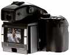

器材库 > 数码后背 > P45

基本参数
发布日期
2005-07-18
停产
是
影像技术
影像传感器
CCD
解像度
7216×5412
有效像素
3900万
影像传感器尺寸
49.1×36.8 mm
像素尺寸
6.8×6.8 micron
画幅比
4:3
动态范围
12 f-stop
存储
静态图像格式
JPEG, TIFF-RGB, TIFF-CMYK, IIQ RAW（Phase One）
静态图像尺寸
7216×5412：[24 bit RGB]112MB, [48 bit RGB]224MB, [64 bit CMYK]299MB
存储卡
CF
输出
色深
48 bits（16 bit per color）
图像管理
RGB, Embedded ICC profile, CMYK
曝光控制
快门速度
1/10000秒
ISO感光度
50, 100, 200, 400
白平衡
日光, 闪光灯, 荧光灯, 钨丝灯
取景器/显示屏
LCD尺寸
2.2英寸
电源
电池
锂电池
续航能力
可拍摄约250张/4小时
备注
工作温度
0-40℃
工作湿度
15-80%
支持的相机
哈苏555ELD, 553 ELX, 503 CW, 501 CM, H1；玛米亚RZ67, 645AFD; 康泰时645AF等
枫叶枫叶2011-08-22 09:354.31 分
操作性 4.50功能性 5.00美观性 5.00趣味性 5.00耐用性 4.50性价比 1.00解像力 5.00色彩还原 4.50
产品图 / 样片
飞思 P45